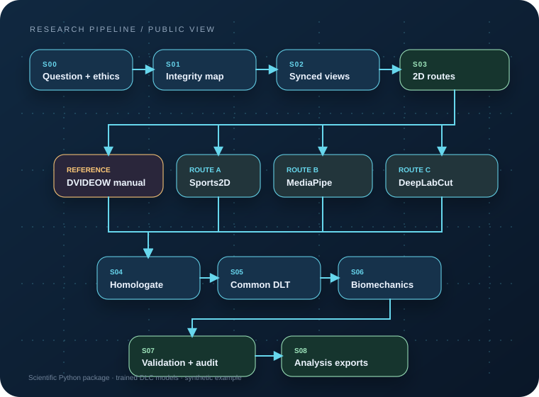

MediaPipe + ROI
Recorta por cámara, devuelve a píxeles originales y deja la visibilidad explícita.
futsal-markerless pose-mediapipe \
--video camera-1.mp4 --side right \
--camera CAM_1 \
--roi-config configs/mediapipe.roi.example.jsonPYTHON PACKAGE · v0.2.0
Installable Python tools for markerless pose estimation, two-camera DLT reconstruction, temporal processing and futsal-kicking analysis, based on the thesis methods.

01 · WORKFLOW
Select a stage to see its inputs, outputs and related documentation.
02 · POSE SYSTEMS
Run the five thesis-trained DeepLabCut configurations or use Sports2D and MediaPipe for new videos.

SPORTS2D / HALPE-26
The thesis route used the Body_with_feet / Halpe-26 pose model, greatest-displacement person ordering and DeepSORT tracking. The 2D results can be mapped to the common landmark schema before multi-camera reconstruction.
futsal-markerless pose-sports2d \
--video camera-1.mp4 \
--config study-camera-1.toml \
--output pose-outputSee the Sports2D method notes for settings that the thesis did not report.
Recorta por cámara, devuelve a píxeles originales y deja la visibilidad explícita.
futsal-markerless pose-mediapipe \
--video camera-1.mp4 --side right \
--camera CAM_1 \
--roi-config configs/mediapipe.roi.example.jsonChoose one of the five released checkpoints and export canonical 2D tracks.
futsal-markerless pose-dlc \
--model ResNet-101 --model-bundle models\ResNet-101 \
--video camera-1.mp4 --camera CAM_1 --output predictionsCombine synchronized pixel tracks with the investigator's camera calibration.
futsal-markerless run \
--tracks paired_tracks.csv --calibration calibration.json \
--side right --impact-frame 240 --window-start-frame 180 \
--output trial-outputExport 3D positions, speeds, sagittal joint angles and a 101-point phase curve.
futsal-markerless bilateral \
--dominant right.csv --non-dominant left.csv \
--output bilateral.csv03 · INPUTS AND LICENSES
The package accepts new synchronized videos, 2D tracks and camera calibrations.
04 · REFERENCES
Use the thesis for the experimental procedure and cite the original pose-estimation tools together with this package.